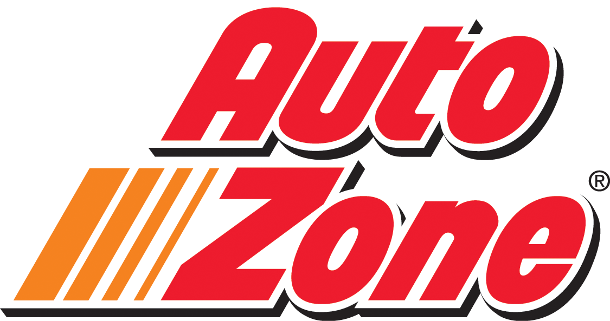
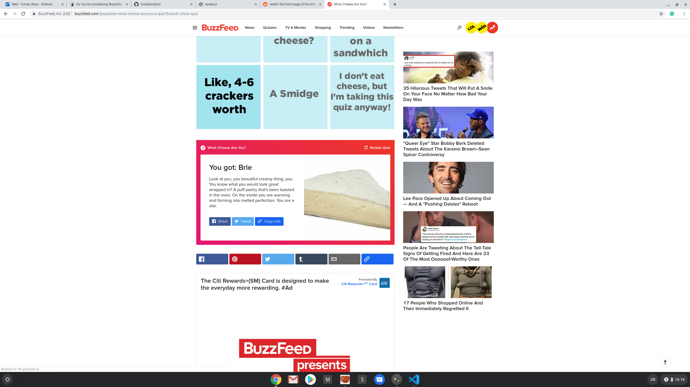

So you're considering brownfield
"Zetor industrial brownfield before demolition" by brozkeff is licensed under CC BY-SA 2.0
@turnrye
Hi! I'm Ryan.

Considering Brownfield
- What is it
- Why we're doing it
- Is it for your app
- Take the plunge
So what is it?
Lets you add cross platform components in existing apps
Lets you migrate an app to React Native
Is not initialized via the CLI or Expo
So What is it?
React Native on top of an existing app
Considering Brownfield
-
✔️
What is it
- Why we're doing it
- Is it for your app
- Take the plunge
We have an Android+iOS native app in the appstore that was
hurting
We needed to overhaul it
Even with the most aggressive timeline, we needed to add new
features and maintain the old app before the new is ready
We have just 1 team
But we had a trick up our sleeve

Other teams are using React for web frontends already, and we
share many common features and APIs
Does this sound familiar to anyone else?
Considering Brownfield
-
✔️
What is it
-
✔️
Why we're doing it
- Is it for your app
- Take the plunge
Filter questions
- Cross platform
- JavaScript/TypeScript/ReasonML
- Business alignment
Bonus questions
- Shared components
- Better designer engagement
- Shared tooling
UI-Data Continuum
|
Components |
Modals |
Flows |
| No data share |
✔️ |
✔️ |
✔️ |
| Native RN |
❓ |
✔ |
✔ |
| Native RN |
❌ |
❓ |
✔️️ |
Feature migration
|
Feature problems |
They're OK |
Need additional |
| Arch. is good |
✔️ |
✔️ |
✔️ |
| Meh arch. |
❓ |
❓ |
✔️ |
| Throw it out |
❌ |
❓ |
❓ |
Other considersations
- Simple customer journey 👌
- Prod support of something new
Considering Brownfield
-
✔️
What is it
-
✔️
Why we're doing it
-
✔️
Is it for your app
- Take the plunge
Build A Plan
- Introduce React Native
- Share state or service calls xplat
- Transition screens over
- Migrate over base nav, e.g. tabs
Start small
- Begin with the simplest feature
- Focus on getting the tooling right
Taming the bridge
-
Combine native event emitters with JS native module callback
-
Similar approach can be used to clone states
-
Be prepared to handle the platform lifecycle
Transition screens
- Target the "leaf node" experiences
- Embed multiple React apps in the legacy nav
-
Remember: if it's hard, you're probably doing something wrong
- Consider revamping your legacy nav if needed
Anticipate Platform Work
-
You own the platforms, but you have to absorb RN's changes
-
Platform changes can impact brownfield in unexpected,
problematic ways
Look at other materials

It's not scary, it's just another challenge.
Considering Brownfield
-
✔️
What is it
-
✔️
Why we're doing it
-
✔️
Is it for your app
-
✔️
Take the plunge